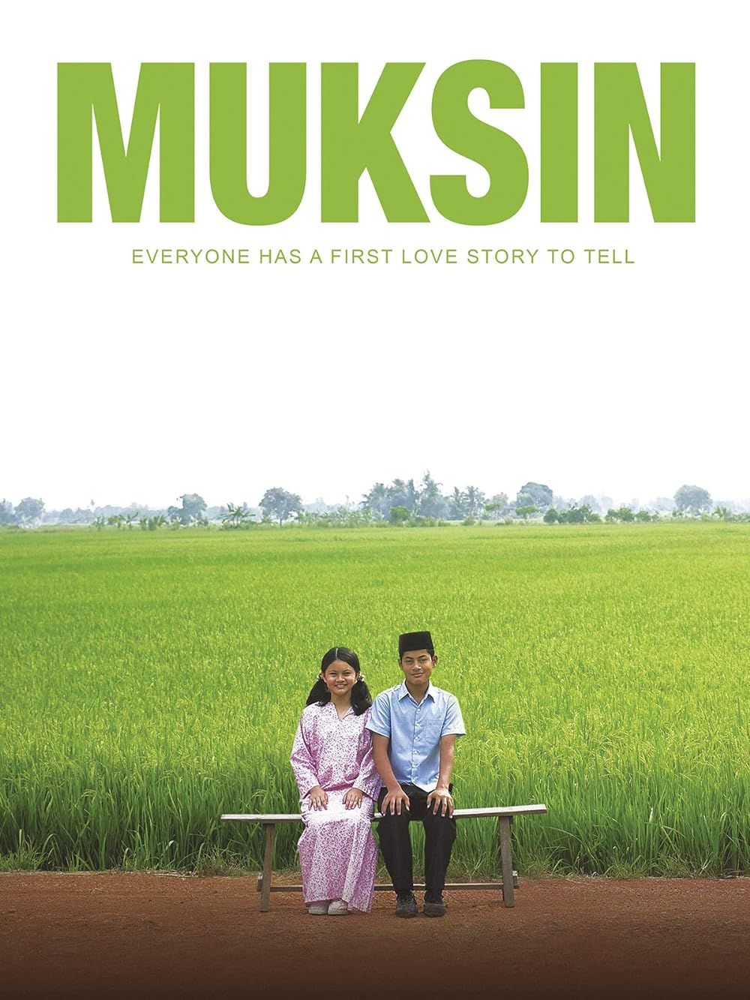

April Story (1998). Dir Shunji Iwai.
The reason I loved this film is how melancholic it is. I love that the film amazingly captured peaceful, tender, dreamy sensations. I could relate to the main character so much.

Mukhsin (2006). Dir Yasmin Ahmad
Cannot emphasise enough how I absolutely love tender films and this is one of them. A soft, melancholic, coming-of-age film from local scene. I adore the family dynamic in the film so much, how I wished I have that during my lifetime/growing up. I don’t really have much to say about the film as nothing really happened in it, just vibes. Highly recommended for those that are looking for tender, quiet, coming-of-age, asian film.
 Lullabies in a Glass Wilderness- Lalleshawari. The album brilliantly captures the hazy, dreamy, melancholy, unease yet ethereal sensation that I look for and absolutely adore in any media that I consume, and it remind me of April Story (1998). Both projects are my absolute favourite on their respective medium.
Lullabies in a Glass Wilderness- Lalleshawari. The album brilliantly captures the hazy, dreamy, melancholy, unease yet ethereal sensation that I look for and absolutely adore in any media that I consume, and it remind me of April Story (1998). Both projects are my absolute favourite on their respective medium.